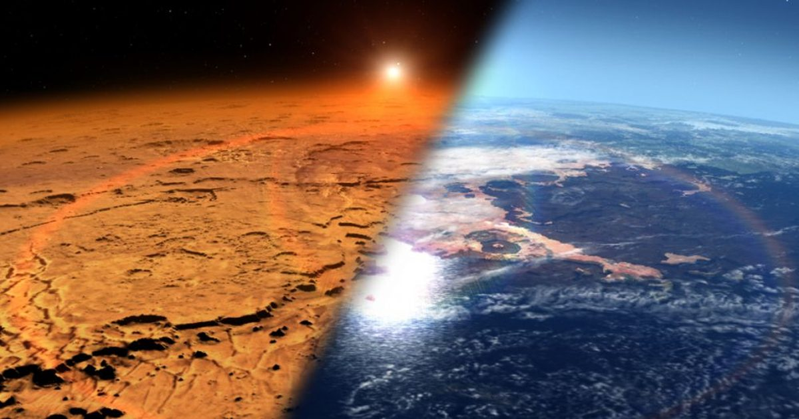

Ученые используют древние дожди для составления карты возможного происхождения жизни на Марсе
Миллиарды лет назад дождь, возможно, помог сформировать химию жизни на Марсе.
Новое исследование показывает, как формальдегид, важная пребиотическая молекула, мог достичь поверхности.
Эта карта может помочь будущим миссиям в поисках признаков прошлой жизни на Марсе.